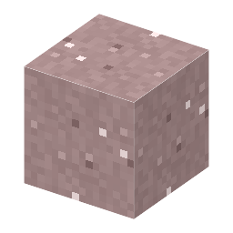

説明
①子ども レアアースがくっついた、白っぽい粘土。イットリウムが多い。
②学生 ジャングル・サバンナの地表近く（ボーキサイトと同じ所）。シャベルで掘る。4つ＋硫酸アンモニウム＋水 → 希土類の浸出液。
③大人 暖かく雨の多い所で花崗岩が風化した粘土に、希土類のイオンが表面にくっついている（イオン吸着）。塩の水で洗うと、アンモニウムイオンと入れかわって希土類が出てくる。放射性の物がとても少ない。
④ガチ 中国南部の江西省などの鉱床で、重いレアアース（イットリウムなど）の多くはここから。掘り方によっては、山や川を汚す問題も起きた。
作り方
（作り方のレシピは無い：拾う・掘る・ほかの方法）